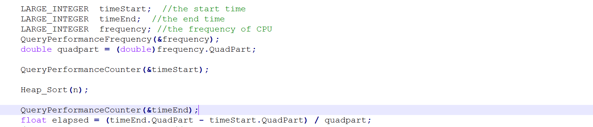
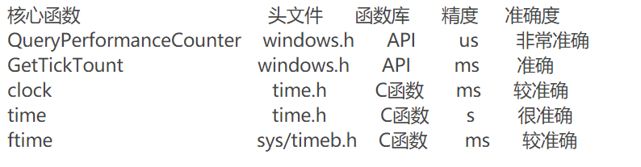

如何记录排序算法所消耗的时间
之前考虑过到底是计算整个程序运行的时间，还是只计算排序算法运行的时间，最后觉得应该只计算算法运行的时间更为合理，所以本次实验我都是只计算排序算法消耗的时间，举一个例子吧：  如图所示，我计算时间都是在排序算法调用前记录一次，排序算法调用后再记录一次。
使用什么工具来记录算法消耗的时间
首先考虑本次实验需要什么精度的时间测量工具，最开始尝试过clock函数，但是由于其精度是ms，由于现在的计算机能力都比较强，所以对于所有的8个算法，当规模稍小时运行时间都是0，所以专门去查了一下精度更高的函数，得到一张表，如下： 
所以我使用精度为微秒的QueryPerformanceCounter函数。
实验所得数据

图表分析
-
实验一算法分析
- insertion_sort
 注:因为理论上插入排序是n^2阶的，所以我对输入规模和运行时间都取了对数，分别作为x轴和y轴，这样就变成了线性关系了，观察曲线，大概是线性的。
注:因为理论上插入排序是n^2阶的，所以我对输入规模和运行时间都取了对数，分别作为x轴和y轴，这样就变成了线性关系了，观察曲线，大概是线性的。 - heap_sort
 注:因为理论上堆排序是nlgn阶的，所以我对输入规模取对数，对运行时间除以n，分别作为x轴和y轴，这样就变成了线性关系了，观察曲线，除了第一个数据反常，大概是线性的。
注:因为理论上堆排序是nlgn阶的，所以我对输入规模取对数，对运行时间除以n，分别作为x轴和y轴，这样就变成了线性关系了，观察曲线，除了第一个数据反常，大概是线性的。 - merge_sort
 注:因为理论上归并排序是nlgn阶的，所以我对输入规模取对数，对运行时间除以n，分别作为x轴和y轴，这样就变成了线性关系了，观察曲线，大概是线性的。
注:因为理论上归并排序是nlgn阶的，所以我对输入规模取对数，对运行时间除以n，分别作为x轴和y轴，这样就变成了线性关系了，观察曲线，大概是线性的。 - quick_sort
 注:因为理论上快速排序是nlgn阶的，所以我对输入规模取对数，对运行时间除以n，分别作为x轴和y轴，这样就变成了线性关系了，观察曲线，大概是线性的。
注:因为理论上快速排序是nlgn阶的，所以我对输入规模取对数，对运行时间除以n，分别作为x轴和y轴，这样就变成了线性关系了，观察曲线，大概是线性的。
- insertion_sort
-
实验二算法分析
- bubble_sort
 注:因为理论上冒泡排序是n^2阶的，所以我对输入规模和运行时间都取了对数，分别作为x轴和y轴，这样就变成了线性关系了，观察曲线，大概是线性的。
注:因为理论上冒泡排序是n^2阶的，所以我对输入规模和运行时间都取了对数，分别作为x轴和y轴，这样就变成了线性关系了，观察曲线，大概是线性的。 - quick_sort
 注:因为理论上快速排序是nlgn阶的，所以我对输入规模取对数，对运行时间除以n，分别作为x轴和y轴，这样就变成了线性关系了，观察曲线，大概是线性的。
注:因为理论上快速排序是nlgn阶的，所以我对输入规模取对数，对运行时间除以n，分别作为x轴和y轴，这样就变成了线性关系了，观察曲线，大概是线性的。 - radix_sort
 注:因为理论上基数排序是n阶的，所以我对输入规模和运行时间都取了对数，分别作为x轴和y轴，这样就变成了线性关系了，观察曲线，除了第一个数据反常，大概是线性的。
注:因为理论上基数排序是n阶的，所以我对输入规模和运行时间都取了对数，分别作为x轴和y轴，这样就变成了线性关系了，观察曲线，除了第一个数据反常，大概是线性的。 - counting_sort
 注:因为理论上计数排序是n阶的，所以我对输入规模和运行时间都取了对数，分别作为x轴和y轴，这样就变成了线性关系了，观察曲线，前面的四个数据都很反常，观察其核心代码：由代码可以看出，只有第二个for循环和第四个for循环是在对待排序数据进行处理，第一个for循环和第三个for循环都是在对一个固定大小（65536）的辅助数组操作，所以这里会花费较多的时间，如果输入数据少则影响更加明显，所以就造成了4~2048规模时，得到的运行时间都差不多。
注:因为理论上计数排序是n阶的，所以我对输入规模和运行时间都取了对数，分别作为x轴和y轴，这样就变成了线性关系了，观察曲线，前面的四个数据都很反常，观察其核心代码：由代码可以看出，只有第二个for循环和第四个for循环是在对待排序数据进行处理，第一个for循环和第三个for循环都是在对一个固定大小（65536）的辅助数组操作，所以这里会花费较多的时间，如果输入数据少则影响更加明显，所以就造成了4~2048规模时，得到的运行时间都差不多。
- bubble_sort
不同的算法间的比较
对于实验一，从图表中的得出的结论是：insertion_sort < heap_sort < merge_sort < quick_sort,不过在规模为2的时候，heap_sort的运行时间是大于insertion，其余数据都是按照以上的顺序来的。
对于实验二，从图表中得出的结论是：n <=32 时，counting_sort < radix_sort < bubble_sort < quick_sort。32 < n <= 256 时，counting_sort < bubble_sort < radix_sort < quick_sort。256 < n < 2048 时，bubble_sort < counting_sort < radix_sort < quick_sort。n > 2048 时，bubble_sort < quick_sort < radix_sort < counting_sort。